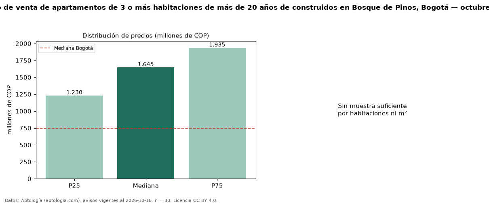

Precio de venta de apartamentos de 3 o más habitaciones de más de 20 años de construidos en Bosque de Pinos, Bogotá — octubre 2026
En Bosque de Pinos (localidad de Usaquén), Bogotá, la mediana de precio de venta de apartamentos de 3 o más habitaciones de más de 20 años de construidos es COP 1,65 mil millones, según 30 avisos vigentes. Frente a la mediana de los apartamentos de 3 o más habitaciones en venta de Bosque de Pinos (COP 1,77 mil millones, n = 82), queda 7 % por debajo; este segmento reúne el 37 % de esos avisos. El área mediana anunciada es 218 m². La administración mediana declarada es COP 1,60 millones al mes (n = 29). El estrato más frecuente es 6 (97 % de los avisos con estrato). La mediana de todos los apartamentos en venta de Bogotá es COP 750 millones (+119 % de diferencia). La mitad central de los avisos va de COP 1,23 mil millones a COP 1,94 mil millones (razón 1,6), una dispersión moderada. Datos: Aptología (aptologia.com), CC BY 4.0 — https://www.aptologia.com/venta/bogota/bosque-de-pinos. Archivos: PDF, CSV con las cifras y gráfica PNG.

| Avisos únicos | 30 |
|---|---|
| Percentil 25 | COP 1.230.000.000 |
| Mediana | COP 1.645.000.000 |
| Percentil 75 | COP 1.935.000.000 |
Fuente: avisos vigentes de portales inmobiliarios recopilados por Aptología, deduplicados (mínimo 30 avisos únicos por celda). Precios pedidos, no cerrados. Fecha: 2026-10-18.